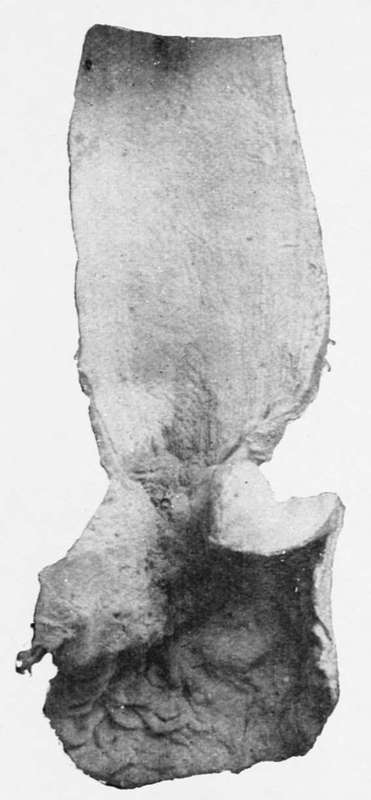

Microscopic Examination. Part 3
Description
This section is from the book "Cancer Of The Stomach", by A. W. Mayo Robson, D.Sc, F.R.C.S.. Also available from Amazon: Cancer of the Stomach.
Microscopic Examination. Part 3
To pass to the genuine cancer cases, what can we do for them when diagnosed at an early stage ? This will depend : (1) on the position of the growth; (2) on its extent; (3) on the presence of adhesions; and (4) on glandular invasion or secondary growths.
Cancer of cardiac end of stomach with dilated oesophagus.
Cancer of cardiac end of stomach, associated with cancer of the lower end of the oesophagus.
First as to position. In irremovable growth at the cardiac end, if it involve the cardiac orifice and adjacent portion of the stomach, gastrostomy or jejunostomy should be performed in order that starvation may be staved off. The view that gastrostomy is both a dangerous and useless operation is, I know, held by some, but I feel convinced that such views are mistaken ones. When these cases, either of cancer of the cardiac end of the stomach or of the oesophagus, were handed over to the surgeon in a moribund condition, the mortality of gastrostomy was, of course, terrible, and the short survival of the cases, even if successful from an operative point of view, made the procedure almost useless, but when one can point to a series of gastrostomies performed since 1897, with only a 5 per cent, mortality and with great prolongation of life to many and alleviation of suffering to all, I feel that there are grounds for saying that the operation is well worth doing. The operation is quite a simple one, and if necessary can be performed under cocaine anaesthesia in a very short time. In several cases the patients have lived a year or more, and have gained considerably in weight, even up to 1^ st., and have lost their pain and the distressing sense of starvation.
The next class of cases is that in which the disease is even more extensive, involving a great part or the whole of the stomach, the disease being irremovable and gastroenterostomy impracticable, and in which any attempt at taking food brings on pain and vomiting, so that the patient, unless relieved, must rapidly die in great distress; here a jejunostomy can be performed by a very simple and similar procedure to that of gastrostomy, and through a Jacques catheter sufficient food can be given to ward off starvation and relieve the pain caused by attempts at taking food by the mouth. This operation can be done through the small exploratory incision, and need involve very little longer time. It may prolong life for months or even for a year, and make the end much easier, and certainly less painful. I reported a case of jejunostoiny in 1891 in which the patient lived three months, and in 1904 one that had lived twelve months after jejunostomy, and the fact of my case of almost complete gastrectomy being well over six years after operation and of the well-being of other complete gastrectomies shows, not only that the passage of food direct into the small intestine may be compatible with comfort, but that the digestive processes may be carried out completely. Although the operation of jejunostomy is rarely called for, it is one nevertheless which should be borne in mind, as in an appropriate case it may confer a great boon, and render tolerable an otherwise comfortless existence. The following is an example :
Mrs. C-, aged forty-six years, the wife of a sea captain, was sent to see me on April 8th, 1904, when she was suffering great pain, which came on at frequent intervals, and she was vomiting five or six times a day ; in fact, whenever she took food it was shortly vomited, the vomit being at times coffee-ground in character. A tumour in the epigastrium about the size of a large flat orange could be readily felt, and at short intervals the whole stomach became hard and rigid. No enlarged glands could be felt in the groin or above the clavicle. There was no tenderness on pressure, and the hard, nodular tumour was suggestive of cancer. Though she gave a history of indigestion and loss of health for eight years or even longer, the acute symptoms had only existed for six months.
On April 13th the abdomen was opened by a vertical incision through the inner margin of the right rectus, when the stomach was found to be involved in cancer from end to end, and as the glands along the lesser curvature were involved and others could be felt passing up through the opening in the diaphragm, and a number also in the great omentum, it was clearly impossible to perforin gastrectomy and impracticable to do a gastroenterostomy. A loop of jejunum was therefore brought up and short-circuited by suture over a decalcified bone bobbin, and a No. 12 Jacques catheter was inserted as described on page 206. The wound was rapidly closed and the patient was put to bed in good condition, the whole operation only having occupied half an hour or less. A meal of peptonised milk was given at once and repeated every two hours. From the time of operation the vomiting was never repeated, and she completely lost her pain. She returned home on the nineteenth day, having gained flesh and strength.
After the patient's return home, on May 17th, I received a letter to say : " Mrs. C- is doing wonderfully well. No pain or sickness, and taking as much food as she requires. She is very content, and is, I think, gaining flesh and strength, so that the result is even better than you had hoped for and much better than I ever expected. She is very grateful." She lived for a year, and during eleven out of the twelve months in comfort.
The third class of cases to be considered is where the disease involves the pylorus and is producing obstruction to the passage onwards of the gastric contents, but where, on account of the extreme feebleness of the patient or because of extensive adhesions, secondary growths, or involvement of glands, it is considered unwise to attempt pylorectomy or partial gastrectomy, though there is sufficient free stomach wall left to enable a gastroenterostomy to be performed. In such cases a gastroenterostomy, if performed with proper expedition and adequate precautions, affords the greatest relief to the sufferer, who not only loses the distress due to painful peristalsis and to the irritation of retained secretion, but also becomes freed from the toxaemia due to absorption of the poisonous fermenting stomach contents, which are drained away into the intestine and there disposed of. Thus life is prolonged and made more comfortable, flesh and colour are regained, and even in cases of cancer the patient may have a new lease of life; in one of my cases the patient lived over two years. Moreover, in some cases where the condition of the patient and not simply the extent of the growth has prevented a radical operation the speedy restoration to health enables a radical operation to be subsequently undertaken. The following cases out of many others that could be cited serve to illustrate what I mean :
Colloid cancer of pylorus producing stenosis.
Continue to:
Tags
stomach, operation, cancer, tumour, ulcer, gastric, gastrectomy